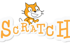
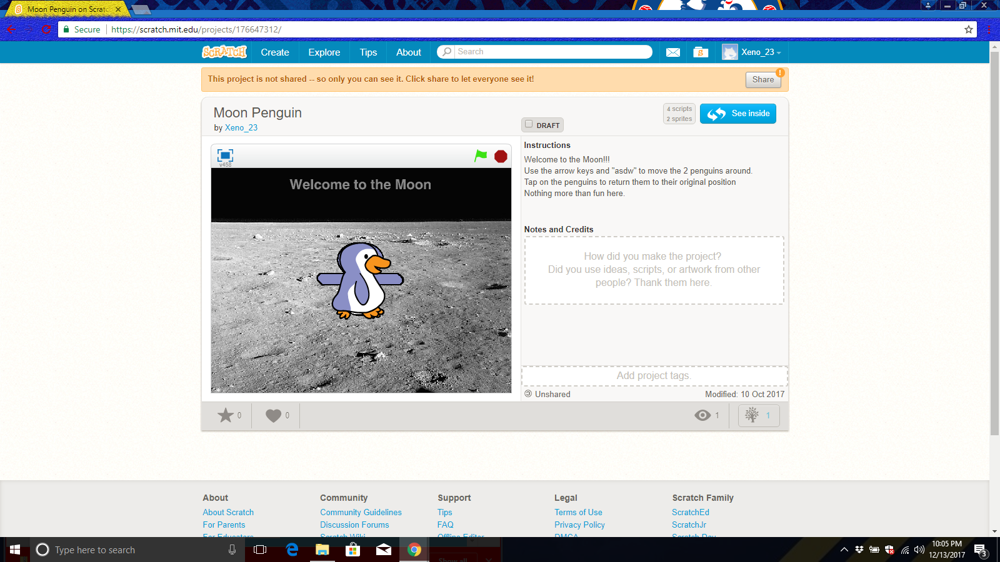
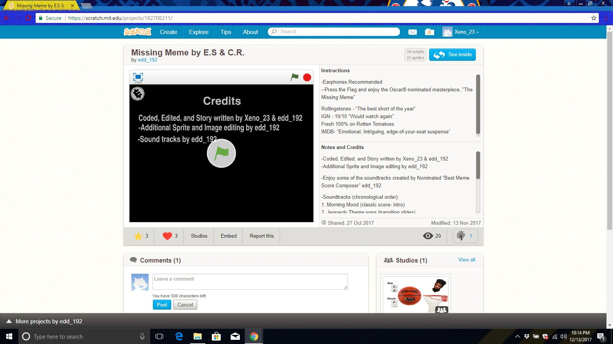

In this page you will see most of my acheivements form my computer class. I hope you enjoy.
This was a simple project that I created myself. The point of the game was to just have fun with the spinning penguins. This was created by using basic commands to control the sprites to rotate and to move around.
This was a more complicated project to make. I made this one with the help of one of my friends. We took days to create the sprites we used and actually made a story board for the project. The story follows a kid that has lost his meme and goes everywere to get it back. Just press the flag and enjoy the show.